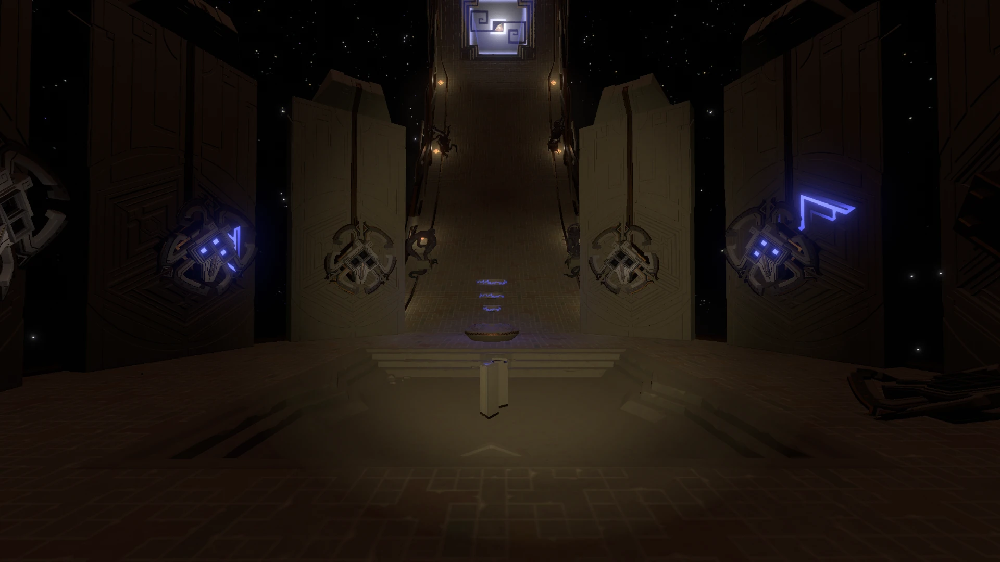

Os Gêmeos da Ampulheta (Hourglass Twins) são planetas binários que se orbitam. O Gêmeo Cinzento é quase inteiramente feito de areia sobre um núcleo de pedra negra. Já o Gêmeo Cálido é um deserto rochoso vermelho e tem um cânion em seu equador. São os planetas mais próximos do sol e seus campos gravitacionais os fazem trocar areia de um planeta ao outro durante 20 minutos, como uma ampulheta.
O núcleo do Gêmeo Cinzento abriga o Projeto do Gêmeo Cinzento, o último meio Nomai para encontrar o Olho do Universo. Ele gera loops de 22 minutos com buracos negros e brancos e armazena as memórias de objetos. O Satélite de Sonda Orbital lança a sonda no começo de cada loop e retornara se encontrou ou não o Olho (como as memórias do Satélite ultrapassam o loop, ele não repete trajetórias). Quando o Olho é encontrado, as máscaras Nomai abrem os olhos e vinculam os seres vivos próximos ao Projeto, passando a manter suas memórias todos os loops (esse é o ponto que o jogo começa). Quando encontrado, o Projeto deveria parar a Estação Solar, impedindo outro loop. Como a Estação falhou, o loop nunca seria encerrado sem intervenção direta.
O Projeto é energizado com um Núcleo Avançado de Translocação, o qual pode ser utilizado para energizar o Hospedeiro. Quando retirado, os loops não ocorrerão mais.